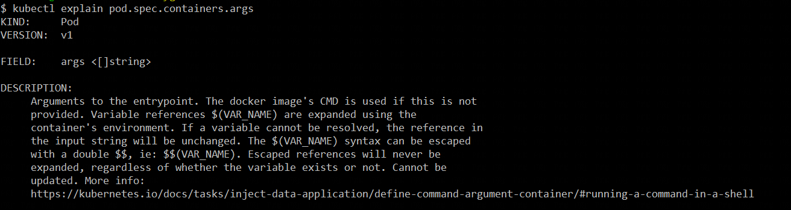
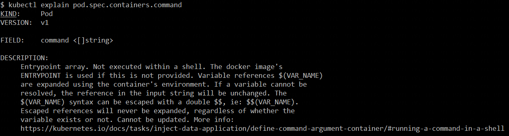
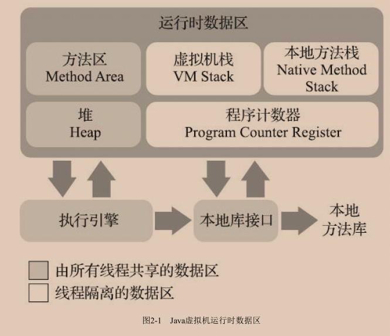
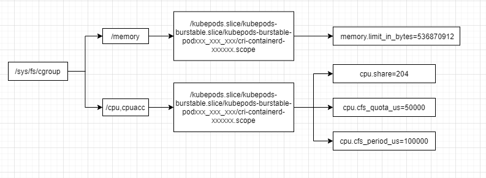
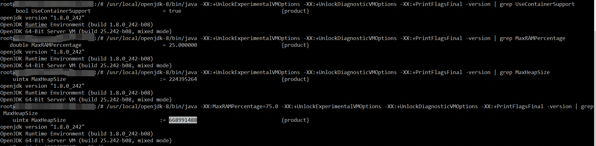
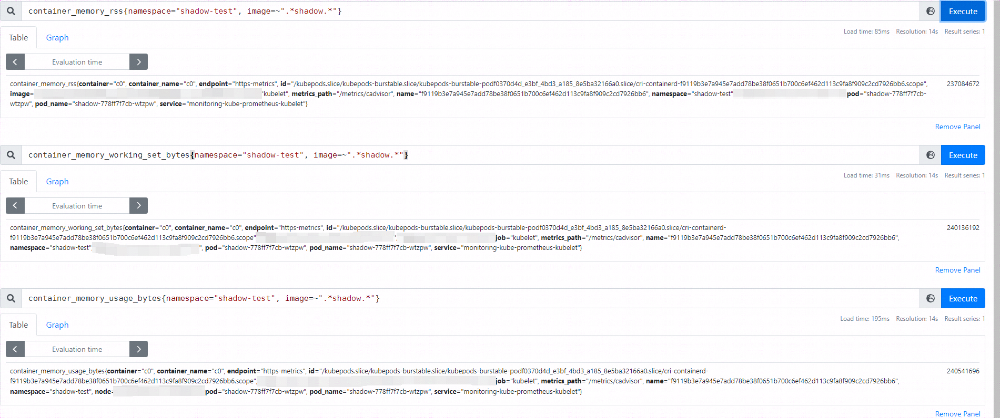
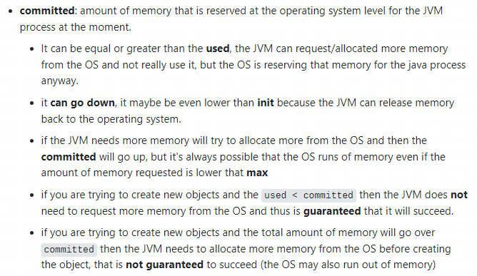
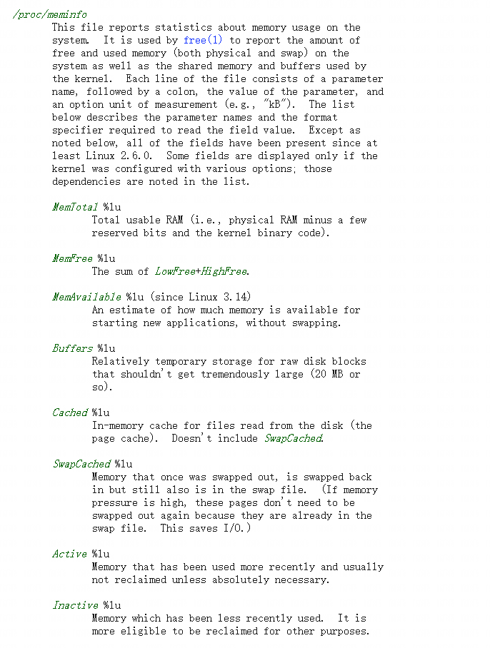

前言
Java是业务应用开发采用的主流语言，容器化部署K8s平台后，遇到用户反馈的许多模棱两可的问题，特此实验、记录，得出可信的结论。
问题描述
环境变量
在一些场景中，需要在镜像的启动命令中使用一些环境变量，以便在镜像运行时传递这些变量改变启动命令中的一些参数，例如Java启动命令中的–spring.profiles.active来设置应用启动时使用的配置文件。
Dockerfile
先来看一下Dockerfile中容器启动命令定义的方式。
CMD
CMD是容器默认的启动命令，CMD的三种使用方式：
CMD [“executable”,”param1”,”param2”] (exec form, this is the preferred form)
CMD [“param1”,”param2”] (as default parameters to ENTRYPOINT)
CMD command param1 param2 (shell form)
ENTRYPOINT
ENTRYPOINT允许为容器定义可执行文件，会优于CMD的shell form和exec form执行。ENTRYPOINT的两种使用方式：
ENTRYPOINT [“executable”, “param1”, “param2”] （exec form）
ENTRYPOINT command param1 param2 （shell form）
exec form不会引入shell进程，因此也不能进行环境变量的替换。
executable所起的进程会作为容器中Pid=1的进程。
shell form或者使用sh/bash -c的exec form可以通过使用exec将shell进程替换成启动的进程，使启动进程的Pid=1，接收docker stop发出的SIGTERM信号。
Runtime
Docker
docker run xxxx可直接覆盖CMD定义的执行命令，如果镜像中定义了ENTRYPOINT，run后面的执行指令会作为entrypoint的参数。
docker run –entrypoint可覆盖ENTRYPOINT的执行命令。
docker run -e/-env key=value可传递环境变量，在镜像启动命令中的如果使用环境变量，需要通过shell包装调起，进行环境变量的替换。其定义方式符合shell的语法规范:
1 | var |
Pod
Kubernets的Pod的container定义中存在command和args的启动参数定义，其中环境变量的使用，可以参考kubectl explain中的说明。


JVM内存
首先来看一下JVM的内存模型：

这里不做深入探讨，简单了解一下各个区域所存放的内容：
堆内存：程序运行的主要内存分配区，是重点关注对象，其中又根据GC的方式划分为不同的区域：新生代、老年代等。
方法区：运行时常量池、类型数据。
虚拟机栈：局部变量表、操作数栈、动态链接、方法出口。
程序计数器。
本地方法栈。
从实际使用来看，又将JVM的内存分为堆内存和堆外内存。下面从一个容器的运行开始，看一下Java应用容器化后，内存信息的相关管理情况。
申请
不论是通过docker通过命令行传递的，还是K8s的Pod的Resource资源配额，本质上都是通过CGroup的虚拟文件系统告诉操作系统，该进程的内存使用控制信息。
CGroup
这里我们通过一个实例来主要看一下内存的设置情况。在K8s集群上部署测试Pod，分配如下资源。
1 | resources: |
cgroup v2是cgroup的下一个版本，对内核和软件的版本有要求，本文还是在cgroup v1上进行测试
随后查看宿主机上cgroup v1的虚拟文件系统的配置，如下图。

cpu、memory的按照如下规则设置：
cpu request * 1024 /1000 = cpu.share。
cpu.share用来设置 cpu cgroup 子系统对于控制组之间的 cpu 分配比例。默认值是 1024。cpu.shares 以相对比例限制 cgroup 的 cpu。
cpu limit=500m：cpu是按照时间片进行划分的，因此cpu.cfs_period_us代表一个时钟周期是100000us，也就是100ms,对应1c，所以500m，cpu.cfs_quota_us=50000us。
memory request，没有体现在memory的cgroup中。
memory limit = 512Mi = memory.limit_in_bytes=536870912。
① 如果没有指定 limit 的话，那么 cfs_quota_us 将会被设置为
-1，即没有限制。② 如果 limit 和 request 都没有指定的话，cpu.shares 将会被指定为
2，这个是 cpu.shares 允许指定的小数值了。③ 如果没有 limit 的指定的话，memory.limit_in_bytes 将会被指定为一个非常大的值，一般是 2^64 ，可见含义就是不对内存做出限制
使用
上述对于容器内资源配额的设置，对于运行在其中的Java进程来说，实际相当于操作系统的资源，JVM在启动的过程中，会根据资源的上限进行内存的划分，这里主要关注堆大小的设置。
这里需要说明的，是Java在容器内读取CGroup的内存限制，需要有JDK版本的支持。具体版本的支持方式不同：
JDK 8u131+、JDK 9版本可以设置如下参数指定堆最大内存：
1
2
3-XX:+UnlockExperimentalVMOptions #开启实验性参数
-XX:+UseCGroupMemoryLimitForHeap #指定JVM从主机读取cgroup限制
-XX:MaxRAMFraction=int #服务器内存/jvm最大内存，默认为4，占1/4JDK 8u191+、JDK 10及以上版本可以使用如下参数来动态指定jvm堆内存最大值：
1 | -XX:+UseContainerSupport #使用容器内存 |
-Xmx/-Xms/这种设置堆大小的方式这里不推荐，如果容器的资源配额发生变化，需要手工修改这些值，非常不方便。
JDK版本对这些参数的支持情况，可通过如下命令查询：
1 | java -server -XX:+UnlockExperimentalVMOptions -XX:+UnlockDiagnosticVMOptions -XX:+PrintFlagsFinal -version | grep UseContainerSupport |
实验测试
下面选用JDK 8u242的版本进行实验验证，所使用Pod的资源配额如下，实际调度在一台内存为32G的节点上：
1 | resources: |
可以看到默认情况下，堆外内存的最大值为224395264=214Mi，大约为850Mi的1/4。使用-XX:MaxRAMPercentage=75.0，再次查看，堆外内存的最大值为668991488=638Mi，大约为850Mi的75%。

OOM
默认情况下，JVM发生OOM后，不会退出，可以检查-XX:+CrashOnOutOfMemoryError和 -XX:ExitOnOutOfMemoryError两个参数的设置。如果需要进行Heap的导出，需要配置-XX:+HeapDumpOnOutOfMemoryError和-XX:HeapDumpPath=$(JVM_DUMP_PATH)两个参数。
下面实例启动命令代表在发生JVM的OOM时导出Heap Dump。
1 | java -jar -XX:+HeapDumpOnOutOfMemoryError -XX:HeapDumpPath=xxx.hprof xxx.jar |
① 如果同时配置了OutOutOfMemoryError的Exit、Crash和HeapDump，则JVM不会退出，只会打印java.lang.OutOfMemoryError: Java heap spac的异常，并导出Heap Dump文件。
② 发生OutOutOfMemoryError的JVM依然可以正常提供api服务，但是属于不稳定的状态，可能会导致错误的结果，所以最好还是重启它。
健康检查
在K8s中是存在健康检查的，通常在实际中，我们使用http请求进行检查，JVM发生oom后，如果配置不退出，是可以正常提供服务的，因此不会发生Pod的重启，也不会将发生OOM的应用提出Service的Endpoint。
内存查看
Kubernetes、Docker、Linux、Prometheus均存在一些指标和命令来查看一个应用的内存情况，这些指标和命令的结果存在差异，令人摸不着头脑，在Java应用中，因为JVM的中还有一层内存模型，所以更为复杂。下面选用一个简单的Java应用，获取这些方式的指标进行分析总结。
监控指标
cadvisor
Prometheus接入Kubernetes后，有一些代表应用的内存指标，其中最主要的两个指标是：container_memory_rss和container_memory_working_set_bytes。
container_memory_rss = /sys/fs/cgroups/memory/memory.status的total_rss。
1
2
3
4
5rss常驻内存，不包括被交换出的内存
total_rss = anonymous memory + swap cache
匿名内存
anonymous memory = active_anon + inactive_anoncontainer_memory_working_set_bytes= container_memory_usage_bytes - inactive file。
这个指标是OOM killer关注的指标。
container_memory_usage_bytes=memory.usage_in_bytes。包含文件缓存，在内存紧张时，可以被收回使用。
container_memory_usage_bytes= container_memory_rss + container_memory_cache + kernel memory

从上图可以看出container_memory_rss < container_memory_working_set_bytes < container_memory_usage_bytes。
container_memory_rss不包含文件缓存所以最小。container_memory_usage_bytes包含所有内存所以最大。
actuator
Spring项目中引入spring-boot-starter-actuator和micrometer-registry-prometheus后，可通过/actuator/prometheus查看监控指标，这里只选取JVM内存的部分。
1 | HELP jvm_memory_max_bytes The maximum amount of memory in bytes that can be used for memory management |
jvm_memory_committed_bytes是从操作系统层面预留给JVM的可用内存。

查询命令
kubectl top
这里使用的是container_memory_working_set_bytes（不包含pause容器）， 是容器真实使用的内存量，也是 limit限制时的oom 判断依据。
docker stats
这里的计算逻辑是container_memory_usage_bytes - container_memory_cache。
free
操作系统的内存使用情况，都记录在/proc/meminfo中，free命令的数据也来源于此。

JVM内存分析
MAT工具
MAT（全名：Memory Analyzer Tool），是一款快速便捷且功能强大丰富的 JVM 堆内存离线分析工具。
1 | jstack <pid> |
在容器中，如果Java进程的Pid=1，会报
1: Unable to get pid of LinuxThreads manager thread。
Arthas
arthas是 Alibaba 开源的 Java 诊断工具，深受开发者喜爱 。
总结展望
因Java应用在容器化过程中，遇到很多棘手的问题：
冷启动时间长
内存占用大
JVM+OS镜像文件大
但是Java作为最广泛使用的语言，已存的开发群体和社区资源庞大。 因此也有一些优化方案被提出，改善这些问题，其中Graalvm最为亮眼，Graalvm支持多个编程语言的运行时，并可以将Java代码编译为机器码。
从GraalVM开始——这是一个高性能的JDK，旨在提高Java应用程序的性能，同时消耗更少的资源。 GraalVM提供了两种运行Java应用程序的方法:在HotSpot JVM上使用Graal即时(JIT)编译器，或者作为预先(AOT)编译的本机可执行文件。 除了Java，它还提供了JavaScript、Ruby、Python和其他一些流行语言的运行时。 GraalVM的多语言功能使得在一个应用程序中混合编程语言成为可能，同时消除了任何外语调用成本。https://docs.spring.io/spring-native/docs/current/reference/htmlsingle/